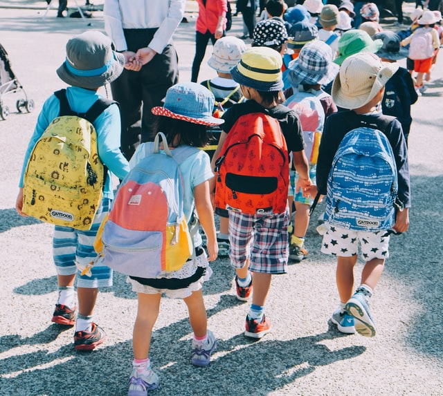
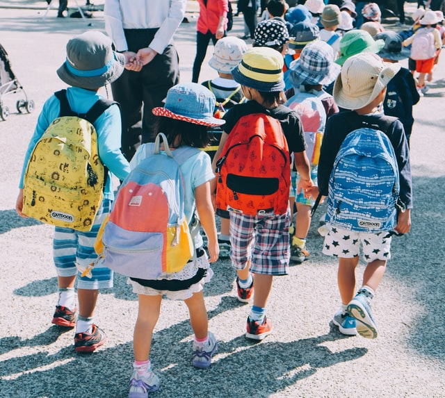
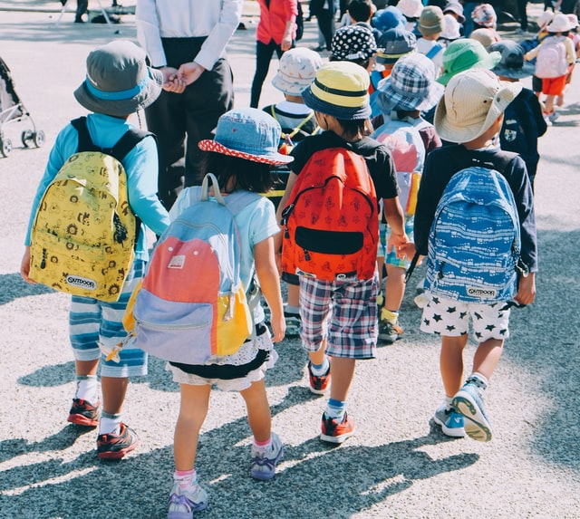

مدرسه امین دارای کادری مجرب و با دانش می باشد که تلاش خود را در ضمینه شکوفایی دانش آموزان خود انجام می دهد
سرویس مدرسه
ثبت نام و پیگیری
دوست داری با سرویس بیای؟؟؟
کتابخانه مجازی
با بیش از 1000 کتاب
من کتاب خواندن را دوست دارم
ویدیو های آموزشی
تمام پایه های تحصیلی
اگر در کلاس حاضر نبودی،فیلم کلاس را از اینجا ببین
اردو و بازدید علمی
تماشای تصاویر گردش علمی
دوست داری اردو کجا بری؟؟
ارتباط پیشرفت تحصیلی دانش آموزان با روش های تدریس
روش تدریس و آموزش اصلی ترین و مهم ترین رکت برای هر معلمی به شمار می آید واگر بهترین روش تدریس توسط معلم انتخاب شود می تواند زمینه ساز پیشرفت و شکوفایی دانش آموزان خود شوند . داشتن یک روش تدریس مثل روش های تدریس کلاسیک در زمان خود بسیار مفید بوده اند اما در زمان دنیا گیری ویروس کرونا باید از روش هایی استفاده کنیم که بتواند بیشترین فهم و مطلب را به دانش آموزان برساند ، در واقع زمانی که تدریس ما به صورت آنلاین می شود باید روش تدریس خود را نیز مطابق با نحوه برگزاری کلاس خود کنیم . همچنین باید در نظر بگیریم که دانش آموزان ما از نظر شخصیتی هیچ کدام شبیه به یکدیگر نیستند و ممکن است تعدادی از دانش آموزان عینی گرا و یا ذهنی گرا باشند. ما در مدرسه امین سعی داریم بهترین ها را در اختیار دانش آموزان خود قرار دهیم.لورم ایپسوم متن ساختگی با تولید سادگی نامفهوم از صنعت چاپ، و با استفاده از طراحان گرافیک است، چاپگرها و متون بلکه روزنامه و مجله در ستون و سطرآنچنان که لازم است، و برای شرایط فعلی تکنولوژی مورد نیاز، و کاربردهای متنوع با هدف بهبود ابزارهای کاربردی می باشد، کتابهای زیادی در شصت و سه درصد گذشته حال و آینده، شناخت فراوان جامعه و متخصصان را می طلبد، تا با نرم افزارها شناخت بیشتری را برای طراحان رایانه ای علی الخصوص طراحان خلاقی، و فرهنگ پیشرو در زبان فارسی ایجاد کرد، در این صورت می توان امید داشت که تمام و دشواری موجود در ارائه راهکارها، و شرایط سخت تایپ به پایان رسد و زمان مورد نیاز شامل حروفچینی دستاوردهای اصلی، و جوابگوی سوالات پیوسته اهل دنیای موجود طراحی اساسا مورد استفاده قرار گیرد.لورم ایپسوم متن ساختگی با تولید سادگی نامفهوم از صنعت چاپ، و با استفاده از طراحان گرافیک است، چاپگرها و متون بلکه روزنامه و مجله در ستون و سطرآنچنان که لازم است، و برای شرایط فعلی تکنولوژی مورد نیاز، و کاربردهای متنوع با هدف بهبود ابزارهای کاربردی می باشد، کتابهای زیادی در شصت و سه درصد گذشته حال و آینده، شناخت فراوان جامعه و متخصصان را می طلبد، تا با نرم افزارها شناخت بیشتری را برای طراحان رایانه ای علی الخصوص طراحان خلاقی، و فرهنگ پیشرو در زبان فارسی ایجاد کرد، در این صورت می توان امید داشت که تمام و دشواری موجود در ارائه راهکارها، و شرایط سخت تایپ به پایان رسد و زمان مورد نیاز شامل حروفچینی دستاوردهای اصلی، و جوابگوی سوالات پیوسته اهل دنیای موجود طراحی اساسا مورد استفاده قرار گیرد.

کادر مدرسه امین را بیشتر بشناسید !!!
احسان حسینی
احسان حسینی با مدرک دکترای روانشناسی به عنوان مدیر مدرسه امین امام جواد تمام تلاش خود را به کار بسته اند تا بهترین امکانات لازم را برای مدرسه فراهم کنند، ایشان با تجربه 30 سال خدمت در آموزش و پرورش و مدت زمان بسیار تدریس در کلاس درس بسیار پویا و کوشا هستند تا بتوانند سطح کیفی مدرسه را بالا ببرند تا دانش آموزان بهترین کیفیت آموزش را دریافت کنند
سرکار خانم استوار
احسان حسینی با مدرک دکترای روانشناسی به عنوان مدیر مدرسه امین امام جواد تمام تلاش خود را به کار بسته اند تا بهترین امکانات لازم را برای مدرسه فراهم کنند، ایشان با تجربه 30 سال خدمت در آموزش و پرورش و مدت زمان بسیار تدریس در کلاس درس بسیار پویا و کوشا هستند تا بتوانند سطح کیفی مدرسه را بالا ببرند تا دانش آموزان بهترین کیفیت آموزش را دریافت کنند
آقای دکتر اناری نژاد
احسان حسینی با مدرک دکترای روانشناسی به عنوان مدیر مدرسه امین امام جواد تمام تلاش خود را به کار بسته اند تا بهترین امکانات لازم را برای مدرسه فراهم کنند، ایشان با تجربه 30 سال خدمت در آموزش و پرورش و مدت زمان بسیار تدریس در کلاس درس بسیار پویا و کوشا هستند تا بتوانند سطح کیفی مدرسه را بالا ببرند تا دانش آموزان بهترین کیفیت آموزش را دریافت کنند
سرکار خانم فلاحی
احسان حسینی با مدرک دکترای روانشناسی به عنوان مدیر مدرسه امین امام جواد تمام تلاش خود را به کار بسته اند تا بهترین امکانات لازم را برای مدرسه فراهم کنند، ایشان با تجربه 30 سال خدمت در آموزش و پرورش و مدت زمان بسیار تدریس در کلاس درس بسیار پویا و کوشا هستند تا بتوانند سطح کیفی مدرسه را بالا ببرند تا دانش آموزان بهترین کیفیت آموزش را دریافت کنند


 
